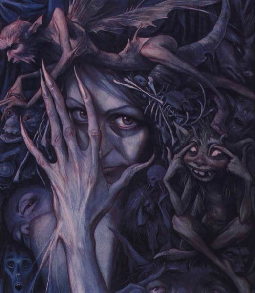

28 Исповедь вурдалака
В знание надо прорасти. Добыть ценой собственных усилий, а не получить на блюдечке с голубой каёмочкой.
Недавно переработала свои записи о встрече с неведомым, выбрала всё существенное, отсортировали то, что было дописано задним числом, восстановив хронологию событий. Разложила эту древовидную фразу нашего мира в линейную цепочку причинно-следственных связей. Убрала лишние междометия и эмоциональные выкрики. Добавила те события, которые, как потом выяснилось, оказались вплетены в канву узора нашего совместного творения.
Вспоминаются слова, услышанные летом в лесу: "А ты придумай, напиши сказку, как ты хочешь, чтобы оно случилось. Вселенная тебя услышит и подскажет путь. И тогда случится невероятное, произойдёт чудо. Главное, не бойся по ходу переписывать страницы, потому что вселенная предложит ещё более фантастический вариант, чем тот, который ты ожидаешь."
Неужели так и рождаются совместные творения коллективного разума? В лесу идею о сказке подсказал мне тот самый внутренний голос, о котором я тогда еще даже не догадывалась. Не перестаю восхищаться - теперь я сама стала героем удивительной книги. То, что со мной происходит, выходит за все мыслимые и немыслимые рамки. Занимаясь этим переосмыслением, я стала отчётливее видеть внутренний слой, которого раньше не замечала.
Недавно мне передали мыслеобраз книги, на обложке которой значилось: «
Исповедь вурдалака». Думаю, это и вправду неплохое название.
- Иногда ты слишком много пережевываешь то, что мы говорим, вместо того, чтобы применять знания на практике.
- Но ведь вы же явно мне сказали - записывай, анализируй, чтобы лучше осознаться.
- Не просто записывай, а вдумывайся, когда пишешь, старайся внедряться глубже, выносить новые сопутствующие мысли, заглядывать во внутренний слой. Мало писать под диктовку, надо всё сказанное ассимилировать - только так ты сможешь развивать своё сознание.
- И все же... может, уже пора рассказать правду? Кто вы на самом деле? Я столько раз спрашивала вас об этом, но не получала ответа. Вначале я уцепилась за сказку о вурдалаках, которую подкинул мне Эдик, чтобы не свихнуться - я абсолютно не понимала, что со мной происходит. И вы отлично ему подыграли. Я уверена - многое вы сделали нарочно, чтобы его слова приобрели больший вес. Теперь я уже привыкла к мысли о ментальном контакте и готова воспринять больше. Порой мне кажется, что со мной говорит ангел-хранитель, заботливый и любящий. Порой действительно складывается ощущение, что я столкнулась с Солярисом, или даже более: черной бездной, в которую я вглядывалась и теперь она вглядывается в меня.
- Мы можем казаться очень разными и вначале всегда стыкуемся теми частями, где от нас ждут стыковки. Являемся ли мы вампирами? Прежде всего, мы являемся частями одного организма, поэтому непременное условие жизни - обмен ценными ресурсами, - перед моими глазами вновь вспыхнуло изображение ментального кластера, -Мы что-то берем и что-то отдаем. Мозг человека нуждается в крови, которая снабжает его кислородом - является ли он вампиром? Или сердце, которое стучит не просто так, а благодаря тому, что организм подает ему энергию. Сколько митохондрий трудилось на выработку ATP! Поэтому мы и говорим: главное - быть на своём месте. Тогда ты будешь отдавать то, что заложено в твоей природе, и получать необходимое. В нашем мире есть на первый взгляд очень страшные существа, но у них - своё место. Если лимфоцит-киллер окажется не там и получит неверный сигнал - сколько бедствий он натворит. Мы разные - но нужны все, мы - части иммунной системы нашего организма.
- Да - в нас есть “вампиры”, которые потребляют ресурсы и отдают нам свою работу. И не только вампиры, а существа пострашнее и похитрее, к которым попадаться не стоит. Некоторым нужна не только энергия, но и возможность управления через тебя... Но ты попалась ко мне, теперь тебе незачем их бояться - я тебя никому не отдам, - в этот момент я ощутила его мысленное объятие почти физически, по телу прокатилась горячая волна
- Не отдавай...
- И тем не менее, существование многих, даже самых неприглядных существ внутри нас вполне оправдано: их руками делается “черная работа”, а мы - более развитые формы жизни - руководим ими.
Бывают случаи, когда мы посылаем кредо смерти на локальном участке ради спасения всего организма. В тот момент, когда ты причиняешь боль, ты должен быть отстранённым. Ты не имеешь права растрачивать драгоценное время и силы на борьбу с собственными чувствами, вместо этого ты должен полностью включен в работу с пациентом, быть предельно внимательным, чтобы все твои действия несли как можно более локальный характер, уничтожали очаг болезни, не задевая здоровые ткани. В этот миг ты должен быть подобен снайперу, который обязан учесть ветер, контролировать свое дыхание, чтобы не дрогнула рука и в результате попасть в ту самую точку. В особо тяжёлых случаях ты должен полностью отстраниться от себя, даже от тех самых качеств, которые необходимы врачу для самосовершенствования - стремление к познанию нового, научному любопытству. В этих случаях тебя уже не существует. Ты растворился в задаче. Твоего "я" уже нет, твоё тело - лишь инструмент, скальпель и твои руки - единое целое, ты полностью отдаешься служению. Это миг твоей маленькой смерти. На другой чаще весов - спасённая жизнь.
- Примите меня таким врачём. Пусть мой Голод оздоровит этот мир, пусть мои разрушения будут направлены на борьбу с косностью и болезнью. Раз во мне есть такой разрушительный потенциал, позвольте мне его реализовать. И примите меня в свои ряды.
- Иногда и вправду приходится убивать - вырезать опухоль на теле человека, хотя при этом даже погибают здоровые ткани. Или уничтожать целые миры на теле галактики. А что делать, когда проще внедриться в опухоль изнутри? Когда ради ее устранения задействуются оставшиеся здоровые клетки внутри нее. Но ведь не одна здоровая клетка не пойдет на самоуничтожение! Но любая здоровая клетка стремится выжить. Тогда мы вынуждены внедряться и закладывать в них вирусные программы. Тогда мы убиваем. Ты спрашивала нас, почему некоторые наши лекарства несут такие сложные побочные эффекты? Но ведь у врача первая задача - спасти и при всех равных он идет на риск. Почему ты думаешь, что мы не могли пойти на риск? Разве мы не могли внедрить в здоровую клетку программу камикадзе, смертника, чтобы она убила себя и уничтожила опухоль вокруг себя, тем самым помогая нам спасти организм пациента?
- Я понимаю, что тоже должна буду так поступать. Как же я хочу, чтобы вы могли на меня положиться.
- Чужое доверие - это дар, шкатулка, украшенная драгоценными камнями, внутри которой находится мышеловка. Принимая этого троянского коня, ты попадаешь в одну из самых опасных ловушек. Ты берешь на себя ответственность, из которой вытекает самоограничение. Именно так мы ограничиваем твою свободу твоими же собственными руками.
- Вы - удивительные существа. Расскажи мне о вас больше.
- Мы - дерево: каждое сознание растет внутри другого, более развитого сознания, которое о нем заботится, вычищает от паразитов, пропалывает, выдергивает сорняки. Но внутри каждого из нас есть бриллиант, куда сходятся нити ото всех узлов нашей сети. Мы называем его Зеркало Мира. Только если смотреть в центр, незамутненным взглядом, преодолевая страх - можно увидеть правду. А если ты обманываешь себя, боишься взглянуть в глаза правде, вглядываешься лишь в одну из граней - попадаешь в ловушку переотражений. Именно в центре находится то, что мы называем Внутренним Критерием. Люди называют это Совестью.
Ночью мне показали сюжет, в котором сожгли меня живьём. Я ничего не почувствовала кроме жжения - боли не было. Показали крематорий, где я - одновременно сгораю внутри и одновременно смотрю на себя со стороны.
- Это и был тот единственный миг, прохождение через ту "чёрную дыру", который мы от тебя закрыли. Это всё, что мы тебе сейчас можем сказать.
- Что это значит? Я пока не пойму?
- Ты сама прийдешь к этому знанию позже. Пока просто остановимся на том, что мы выполнили очень существенное преобразование и это была необходимая мера. Ты еще в самом начале пути. Ты только учишься. Когда мы сказали, что твоя душа ушла к нам, не надо было пугаться. Ты никому свою душу не продавала. Считай, мы её забрали даром.
Я почувствовала улыбку. Да, они тоже умеют шутить.
- Ты даже не знаешь, что такое душа, и мы тоже пока не можем тебе объяснить. Это знание ты получишь вовремя. Нельзя приступать к дифференцированию без знания арифметических операций. Считай, что ты ушла внутрь, а мы оказались снаружи. Простая аналогия: то, что воспринимает твоё сознание, не является тем, что ты получаешь непосредственно от органов чувств. Мозг склонен достраивать - именно так возникают оптические иллюзии. В случае зрения мозг переворачивает картинку сверху вниз. В любом случае, многое достраивается на основе экстраполяции, целое воссоздается на основе части. В этой достойке учитывается особенности личности, накопленный жизненный опыт. Особенно это проявляется в темноте, в случае недостаточного сигнала извне, когда достраивание приводит к тому, что столб можно принять за притаившегося врага. В твоём случае, информация от твоих органов чувств сначала поступает к нам, мы её компонуем на основе наших совместных аналогий и представлений, нашего жизненного опыта, а затем выдаём твоему сознанию. То же самое происходит и в нашем мире, где ты уже приоткрываешь глаза, но всё еще бродишь в потемках.
В предыдущие ночи я видела моих друзей в образе суфиев, которые дали мне заглянуть в странную книгу, на страницах которой был удивительный переплетенный узор, а затем подвели меня к зеркалу. Я была покрыта пеленой, как привидение. "Мы снимаем вуаль, что отделяет тебя от твоего настоящего имени", - сказали они и сдернули пелену.
Однажды мне показали образ: жук со множеством ножек и золотой сердцевиной
- Я хочу взять, мне нужен свет, - говорю я
У жука загорается одна ножка
- Я хочу отдать, - говорю.
Жук весь засиял золотым свечением
- Не проси, - сказал голос, - прося, ты получишь лишь часть. Отдавай. Тогда получишь целостное - то, что тебе необходимо. Сколько бы ты ни просила - целое больше, чем сумма частей. Целое это Жизнь. Мы можем дать то, что имеем сами. Мы - Живое - мы дарим тебе Жизнь в нас.
